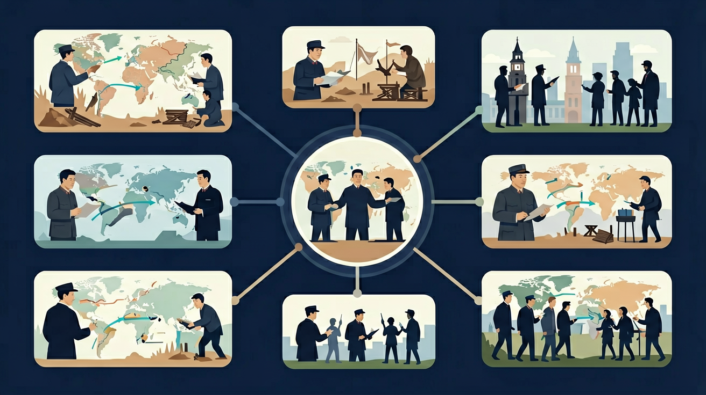

了解第一次世界大战爆发的背景与帝国主义国家间的矛盾，理解战争对世界格局的深远影响和凡尔赛—华盛顿体系的形成。

🎯 能说出两次世界大战的根本原因和导火索
🎯 能比较两次世界大战的性质和影响差异
🎯 能分析凡尔赛体系对二战爆发的影响
❓ 为什么一战被称为‘帝国主义战争’而二战是‘反法西斯战争’？
❓ 坦克在一战和二战中的作用有什么不同？
❓ 如果没有萨拉热窝事件，一战还会爆发吗？
学完这一课，这些问题你都能自信地回答。
一战爆发的直接导火索是？
下列哪项属于二战性质？
两次世界大战是高中历史的重要内容。了解第一次世界大战爆发的背景与帝国主义国家间的矛盾，理解战争对世界格局的深远影响和凡尔赛—华盛顿体系的形成。
了解日本军国主义的侵华罪行；通过了解正面战场和敌后战场的抗战，认识中国战场是世界反法西斯战争的东方主战场，理解十四年抗战胜利在中华民族伟大复兴中的历史意义。
点击时代按钮切换世界格局；结合本课主题观察空间分布。
把卡片拖到核心概念 / 方法技能 / 应用情境 / 常见误区。
拖完 4 项后自动判分。
迁移任务：找一道与「两次世界大战」相关的练习题或生活情境，用本课方法完整解答一遍。
第一次世界大战是帝国主义矛盾总爆发；第二次世界大战是法西斯侵略与世界反法西斯力量的决战。战争造成巨大灾难，也改写国际格局：凡尔赛—华盛顿体系到雅尔塔体系，联合国成立，殖民体系加速瓦解。
一战抓同盟协约与凡尔赛体系弊端；二战抓绥靖、主要战场与反法西斯统一战线。最后落到国际秩序重构。
常见误区：常见误区是把两次大战原因完全等同，或忽视反法西斯统一战线的作用。
第二次世界大战的性质主要是？
1. 联合国安理会五常否决权设计直接源于二战教训：1945年旧金山会议确立的"大国一致"原则，正是反思国联（1920年成立）因美苏缺席、英法主导而失效的历史。2022年俄乌冲突中，俄罗斯动用否决权阻止涉乌决议，其法理基础正是雅尔塔会议确立的常任理事国特权。
2. 现代集装箱运输的标准化源自战时物流经验：美军在诺曼底登陆（1944年）时发明的"胜利轮"运输系统，通过统一货箱尺寸（8×8×20英尺）提升效率。1956年马尔科姆·麦克莱恩据此开发商业集装箱，如今全球90%货物通过这种源于二战的技术运输。
3. 抗生素大规模生产技术的突破始于二战需求：1941年青霉素年产量仅4.5万单位，到1945年诺曼底登陆时已达6.8万亿单位。辉瑞公司开发的深罐发酵技术（原为生产柠檬酸支援战争）战后转为民用，推动现代制药工业发展。2020年新冠疫苗的快速研发同样受益于战时建立的紧急研发机制。
1. 问题：为什么说《凡尔赛条约》第231条"战争罪责条款"埋下隐患？分析线索：比较1871年《法兰克福条约》对法国的50亿法郎赔款与《凡尔赛条约》对德国1320亿金马克赔款（约合当时470亿美元）；注意1923年鲁尔危机时德国通胀率达3.25亿%；思考1933年纳粹党竞选口号"砸碎凡尔赛枷锁"的社会基础。
2. 问题：原子弹使用是否加速了日本投降？分析线索：对照1945年8月6日广岛核爆与8月8日苏联对日宣战的时间线；查阅日本最高战争指导会议8月9日记录中"国体护持"争议；比较冲绳战役（1945年4-6月）伤亡12万美军与预估本土作战的百万伤亡预测；思考昭和天皇"玉音放送"中"新型炸弹"的表述权重。
先看19世纪末欧洲火药桶如何形成：俾斯麦精心构建的大陆联盟体系（1879年德奥同盟、1882年三国同盟）因威廉二世"世界政策"（1897年海军法案）而瓦解，英国被迫放弃"光荣孤立"（1904年英法协约、1907年英俄协约）。接着观察1914年危机如何升级：奥匈帝国7月23日对塞尔维亚最后通牒要求48小时内答复，俄国7月30日总动员触发德国"施里芬计划"，8月4日德军入侵比利时将英国卷入战争。战争形态的质变体现在凡尔登战役（1916年，双方伤亡70万）、索姆河战役（首日英军伤亡6万）展现的工业化杀戮。最后看战后秩序重建：威尔逊"十四点原则"（1918年）的理想主义遭遇现实政治，法国元帅福煦评价"这不是和平，是20年休战"——精确应验于1939年。华盛顿会议（1921-1922）确立的太平洋秩序同样脆弱，《九国公约》对华"门户开放"原则与日本"二十一条"（1915年）的冲突，最终演变为1931年九一八事变。二战爆发后，1941年《大西洋宪章》提出民族自决原则，但1945年雅尔塔会议的美苏交易（如外蒙古现状须予维持）又埋下冷战伏笔。两次大战间的技术跃进（从1916年坦克到1945年原子弹）与政治实验（国联到联合国）共同塑造了现代国际体系的基本框架。
1. 错误表现：认为萨拉热窝事件是第一次世界大战的根本原因。认知根源：学生容易将直接导火索与深层矛盾混淆。正确理解：斐迪南大公遇刺只是催化剂，根本原因是帝国主义国家间长期积累的矛盾——德国与法国在阿尔萨斯-洛林的领土纠纷（1871年割让）、英德海军竞赛（1906年无畏舰建造）、俄奥在巴尔干的势力争夺（1908年波斯尼亚危机）。1914年欧洲已形成两大军事集团：三国同盟（德奥意）和三国协约（英法俄）。
2. 错误表现：认为凡尔赛条约主要惩罚对象是德国。认知根源：忽视条约体系的整体性。正确理解：1919-1923年间共签订5个主要和约，构成凡尔赛体系：对德《凡尔赛条约》（割让1/8领土）、对奥《圣日耳曼条约》（禁止德奥合并）、对匈《特里亚农条约》（丧失72%领土）、对保《纳伊条约》（割爱琴海出海口）、对土《色佛尔条约》后被《洛桑条约》取代。华盛顿体系（1921-1922）则重构亚太秩序，如《五国海军条约》规定美英日法意主力舰吨位比例为5:5:3:1.75:1.75。
3. 错误表现：将二战爆发简单归因于经济大萧条。认知根源：线性因果思维忽略政治决策的复杂性。正确理解：1929年经济危机确实加剧矛盾（德国失业率从1929年9%升至1932年30%），但关键转折是1930年代绥靖政策：1935年英德海军协定允许德国重建海军、1938年《慕尼黑协定》割让苏台德区、1939年《苏德互不侵犯条约》秘密议定书划分东欧势力范围。这些决策共同导致1939年9月德国闪击波兰时，反法西斯力量未能及时形成统一战线。
复制提示词到 AI 学伴，生成「两次世界大战」的时间轴或事件提纲；也可以上传你手绘的示意图，请 AI 学伴点评。
复制后可粘贴到 AI 学伴继续对话。
关于两次世界大战，正确的是？
分析爷爷可能参加的战斗序列
先独立作答，再点选项查看对错与错因。
下列哪场战役同时涉及美英法与德国军队？
照片中国会大厦场景最可能拍摄于？
爷爷的勋章最不可能颁发于？
德国在____年签署《凡尔赛和约》，在____年签署无条件投降书。
答案：1919,1945
注意区分两次世界大战结束时间
照片中士兵制服领章显示____军，而勋章记载的诺曼底登陆属于____战场。
答案：苏,欧洲
攻克柏林为苏军，诺曼底属西线战场
✅ 苏德战场的斯大林格勒战役才是根本转折
💡 受好莱坞电影影响夸大西线作用
✅ 条约核心是处置德国（割地、赔款、裁军）
💡 混淆同盟国核心成员
口诀：帝国不平衡，萨城枪声起；凡尔赛埋雷，经济危机逼
类比：像两栋失火大楼：一战是住户抢逃生通道互踩，二战是消防员和纵火犯的斗争
（高考题）《凡尔赛条约》中‘战争罪责条款’针对的国家是？
若用一战‘堑壕战’解释现代城市防御，最贴切的是？
下列哪组数据组合能说明二战全球性？
点击节点跳转到对应章节；可切换布局。